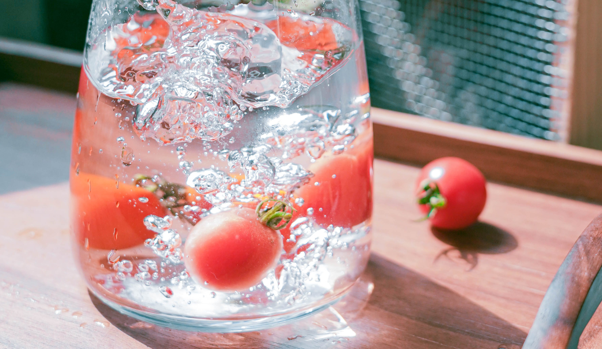

高速快门的逆袭技巧
一些入门或中端机器快门速度有限制，比如尼康D750最高快门为1/4000（高端机1/8000），虽然1/8000很少用的到，但在实际拍摄中还是要予以注意：对于高速快门摄影，凝结一些精彩瞬间可能要借助闪灯的帮助，如果有外闪建议带上，当然是否需要使用以及具体设置要依据场景和拍摄对象来定：对于低速快门摄影，画面稳定是关键，建议准备一个质量可靠的脚架。
虽然光圈优先可以间接控制快门，但要提前指定快门速度，还是建议使用快门优先更方便：一般高速摄影手持即可，对于水滴甚至子弹等超高速摄影题材，建议上架子，设置好快门速度，另外布光要做好，必要时启用闪灯。
555感恩我抢上了影棚摄影，影棚摄影真的让我学习到了好多，让买回来的相机总算有了那么一点点价值，好的一些碎碎念，张津老师真的太温柔太好了！
虽然我现在还是拍的很烂但是我会加油55555我会加油，我还想拍美女我不想呆在家里，想和朋友出去玩5555一起拍照